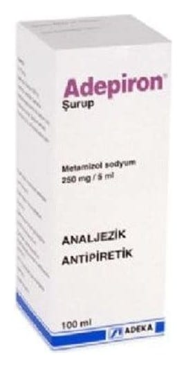

Adepiron 250 mg/5 ml Şurup, 100 ml

Ne için kullanılır
KT · Bölüm 1ADEPİRON®metamizol sodyum etkin maddesini içerir. Şurubun 5 ml’sinde 250 mg metamizol sodyum bulunur. Plastik (LDPE/HDPE’den oluşan) kapaklı 15 ml’lik ölçek kabı ile birlikte, 100 ml’lik renkli cam şişelerde kullanıma sunulmuştur. ADEPİRON®berrak, sarı renkte, portakal kokusunda ve tadında bir şuruptur.
Piyasada ayrıca ADEPİRON®ampul ve tablet formları da bulunmaktadır.
ADEPİRON®, pirazolon grubuna ait ağrı kesici ve ateş düşürücü olarak kullanılan bir ilaçtır.
ADEPİRON®aşağıdaki durumların tedavisi için kullanılır: - Yaralanma veya cerrahi sonrası ani gelişen (akut) şiddetli ağrı - Kramp benzeri karın ağrısı (kolik) - Kansere bağlı ağrı - Başka bir tedavinin mümkün olmadığı diğer akut veya kronik şiddetli ağrı - Diğer önlemlere yanıt vermeyen yüksek ateş